Instances Management Tasks Using the Scripts
Please read Workshops Organisation if you haven’t done so. To complete this episode you will need:
- if you are self-studying the course or attending a workshop using your AWS account:
- to have created your AWS account as described in Create Your AWS Account (Episode 1, Lesson 1).
- to have configured your AWS account as described in Configure Your AWS Account (Episodes 2, Lesson 1).
- to have configured your terminal environment as described in either of these episodes:
- Configure Your Terminal Environment (Episode 3, Lesson 1) — or
- Configure Your AWS CloudShell Environment (Episode 4, Lesson 1)
- to have configured instances internet access as described in Configure Instances Internet Access (previous episode, this lesson).
- your base domain name.
- the AWS resource IDs of your: host zone, security group, and subnet.
- the AWS Console login details of your IAM user account: login page, username and password.
- if you are attending a workshop using a Cloud-SPAN AWS account (and an AWS Linux instance), you will be given the necessary information at the workshop.
Overview
This episode will guide you through the main tasks involved in creating and managing AWS instances for a course/workshop, including: configuring the Scripts, running the Scripts, and auxiliary tasks such as managing worshop cancellations and troubleshooting.
Sections
The Scripts Running Environment
This section introduces the Scripts, the directory-file structure the Scripts require to run successfully, and the constraints you need to observe in configuring and running the Scripts.Configure the Scripts Running Environment
You will create a running environment for the Scripts within your terminal environment: a Git Bash terminal, a Linux terminal, a Mac terminal or the AWS CloudShell terminal. You will create the directory-file structure that will enable the Scripts to manage a few AWS instances.Create the Instances
You will create the instances specified in Section 2 and this will generate some results. The results generated and displayed to the terminal by the Scripts that create AWS resources (instances, login key files, etc.) will be explained to help you understand how the Scripts work.Check Instances Are Accessible
Once instances are created, it is convenient to check that they are accessible throughsshby logging in to a few of them. This section will show you how to login to instances in a way easier than usingsshdirectly.Understand the Results of Creating Instances
Creating AWS resources involves making AWS requests that return back results that are saved to files within the Scripts running environment. These files are crucial for the successful operation of the Scripts in stopping, starting and eventually deleting the created resources. These files are explained in this section to round up your understanding of how the Scripts work.Typical Instances Life Cycle: create, stop, start and delete instances
This section describes the typical use-case scenario of instances management for a workshop /course. It describes our approach to instances management using both the terminal and the AWS Console. This section also describes how to create instances in two steps in order to reduce costs when deploying relatively large instances in terms of storage.Unforeseen Instance Management
This section describes our approach to handle unforeseen instance management requests such as creating additional instances for a workshop due to late registrations, or deleting some (not all) instances before the end of a workshop due to cancellations.Troubleshooting
This section presents some problems we have come across in managing instances and how to solve them.
1. The Scripts Running Environment
These are Scripts that create and manage AWS instances
Output
aws_domainNames_create.sh aws_instances_configure.sh csinstances_create.sh
aws_domainNames_delete.sh aws_instances_launch.sh csinstances_delete.sh
aws_elasticIPs_allocate.sh aws_instances_terminate.sh csinstances_start.sh
aws_elasticIPs_associate2ins.sh aws_loginKeyPair_create.sh csinstances_stop.sh
aws_elasticIPs_deallocate.sh aws_loginKeyPair_delete.sh
aws_elasticIPs_disassociate.sh colour_utils_functions.shThe four scripts csinstances_*.sh (on the right) are to be run by the user of the Scripts, the person in charge of creating, configuring, stopping, starting and deleting AWS instances for a workshop /course. The scripts aws_*.sh are invoked by the scripts csinstances_create.sh or csinstances_delete.sh to either create or delete instances and the corresponding domain names, IP addresses, and login keys. The file colours_utils_functions.sh provides (is “sourced” by) the other scripts with text colouring functions (for the results of the other scripts to be easier to read) and other utility functions.
Configuring the directory structure
To run the Scripts successfully we first need to specify the following three items of information, each in a separate file: - the names of the instances to create (delete, etc.) - the AWS resources to be used: the Amazon Machine Image (AMI) template, base domain name, etc. - the tags to be used to label the instances and related resources
The three files with that information must be placed inside a directory called inputs, and the inputs directory must be placed inside another directory whose name you can choose. We use this directory structure:
Output
courses ### you can omit this directory or use other name
genomics01 ### course/workshop name; you can use other name
inputs ### you **cannot** use other name
instancesNames.txt ### you can use other name
resourcesIDs.txt ### you **cannot** use other name
tags.txt ### you **cannot** use other name
outputs ### created automatically by the Scripts - not to be changed
genomics02 ### another course: inputs and outputs dirs. inside
metagenomics01 ### another course: inputs and outputs dirs. insideWe handle a courses directory that contains a directory for each course /workshop that we run, for example: genomics01, genomics02, metagenomics01, etc. Each course directory has its inputs directory and inside the three three files mentioned above: instancesNames.txt, resourcesIDs.txt, and tags.txt (note that we are using this style for file/directory names you can choose and this style for names you cannot change).
You must create the directory structure above, or a similar one, and those three files before running the Scripts to create the instances for a course. The outputs directory inside each course/workshop directory is created automatically by the Scripts to save the results of running the Scripts.
Configuring the file instancesNames.txt
You can use another name for the file instancesNames.txt. Inside the file you must specify each of the names of the instances to create (delete, etc.) in one line, like this:
Output
instance01
instance02
...
instance99Instances names can use any alpha-numeric characters and hyphens/minus signs (-), for example: genomics-instance01, metagenomics-course-instance-01.
Configuring the file resourcesIDs.txt
You cannot use another name for the file resourcesIDs.txt. Inside the file you must specify all the following items of information:
Output
imageId ami-00c0ea23e53f48472
instanceType t3.small
securityGroupId sg-0771b63b387fde199
subnetId subnet-00ff83b7407dcdc83
hostZone cloud-span.aws.york.ac.uk
hostZoneId Z01RCJ0WP2538133YP3UZ You cannot change the values on the left column.
You can and should change the values on the right column. For this course, however, you will use the values specified for imageId and instanceType: ami-00c0ea23e53f48472 and t3.small. But you must change the values for securityGroupId, subnetId, hostZone, and hostZoneId, to the values of your security group id, subnet id, host zone (domain name) and host zone id, of which you made a note in the previous episode.
The value for imageID, ami-00c0ea23e53f48472, is the AWS resource ID of the Cloud-SPAN AMI we used for the Cloud-SPAN Genomics course. Later you may eventually need to use other AMIs to create instances, as discussed in the next episode.
The value for instanceType, t3.small, specifies the type of virtualised hardware the instances you are going to create will use. The type t3.small has 2 processors (vCPUs) and 2 Giga Bytes of main memory. Later you may eventually need to choose smaller or greater instance types with fewer or more processors and smaller or larger main memory, as discussed in the next episode.
Running the Scripts — overview and constraints
To run any of the Scripts you only need to pass the name of your file instancesNames.txt as a parameter to the script you want to run.
The Scripts can access the files resourcesIDs.txt and tags.txt based on the location of instancesNames.txt.
Assuming the directory structure and file names above, the script csinstances_create.sh should be run as shown in these two code boxes (see notes below):
Code
csuser@cloud-admin-instance:~
$ csinstances_create.sh courses/genomics01/inputs/instancesNames.txt
... ### RESULTS Code
csuser@cloud-admin-instance:~
$ cd courses/
csuser@cloud-admin-instance:~/courses
$ csinstances_create.sh genomics01/inputs/instancesNames.txt
... ### RESULTS In the code boxes:
- we are showing our terminal prompt to highlight the current working directory from which
csinstances_create.shis being run. - our shell prompt is configured to use two lines, displaying
csuser@cloud-admin-instance: working-dirin the first line, and the dollar sign$on its own on the second line. - the courses directory was created at the home (
~) directory - in the first code box, you are running
csinstances_create.shwhile being in the home directory; hence the file name (relative path) that you must pass tocsinstances_create.shiscourses/genomics01/inputs/instancesNames.txt - in the second code box, you are first moving to the courses directory with the command
cd; hence the file name (relative path) that you must pass tocsinstances_create.shisgenomics01/inputs/instancesNames.txt
DON’T RUN the Scripts with a relative path that does not include the name of the “course/workshop” directory — they will fail
Following the code examples above, you should not move into the genomics01 directory and run the scripts as shown below:
Code
csuser@cloud-admin-instance:~/courses
$ cd genomics01/
csuser@cloud-admin-instance:~/courses/genomics01
$ csinstances_create.sh inputs/instancesNames.txt
... ### FAILURE RESULTSHowever, the following will work:
Code
csuser@cloud-admin-instance:~/courses/genomics01
$ csinstances_create.sh ../genomics01/inputs/instancesNames.txt
$ csinstances_create.sh ~/courses/genomics01/inputs/instancesNames.txt The reason to force the specification of the “course/workshop” directory name in running the Scripts is to prevent (reduce the likelihood of) running the Scripts in the wrong place, which can happen when you are managing instances for different courses or test runs at the same time.
Running the other Scripts:
All the Scripts are run in the same way, passing as parameter the name of your file instancesNames.txt as shown below. While the scripts aws_*.sh are meant to be run (invoked) only by the scripts csinstances_*.sh, running the scripts aws_*.sh directly by the user may be useful for improving them or fixing a failed step in creating multiple instances, as will be discussed later in this episode.
Code
$ csinstances_stop.sh genomics01/inputs/instancesNames.txt
$ csinstances_start.sh genomics01/inputs/instancesNames.txt
$ csinstances_delete genomics01/inputs/instancesNames.txt
$ aws_domainNames_create.sh genomics01/inputs/instancesNames.txt
..
$ aws_loginKeyPair_delete.sh genomics01/inputs/instancesNames.txt 2. Configure the Scripts Running Environment
This and the subsequent sections are hands-on. In this section you are going to configure the Scripts running environment for a sample course/workshop — in subsequent sections you will use this environment to create and manage instances. Your are going to:
- create the directory structure
courses/instances-management/inputsat the home directory - create the three configuration files: instancesNames.txt,
resourcesIDs.txtandtags.txt
While you can choose a different name for the file instancesNames.txt and for the parent directories of the inputs directory, for this course we recommend that you use the names suggested as otherwise you will have to adapt the intructions below.
Create the directory structure: courses/instances-management/inputs
Open your (Git Bash, Linux, Mac, or AWS CloudShell) terminal where you installed the Scripts.
Being at the home directory (~), type the mkdir command below and press Enter to create the directory structure:
Code
csuser@cloud-admin-instance:~
$ mkdir -p courses/instances-management/inputsThe option -p (or --parents) tells mkdir to create parent directories as needed, and not to complain if any of the directories exist.
3. Create the Instances
To create the instances specified in the previous section, you only need to run csinstances_create.sh as shown below while being at the home directory (use the Tab key to complete the names of the script, the directories and the file):
Code
csuser@cloud-admin-instance:~
$ csinstances_create.sh courses/instances-management/inputs/instancesNames.txt Once you press Enter the output you will see in your terminal will be like the one in the screenshot below. The script csinstances_create.sh will invoke each of the scripts that creates /configures AWS resources. Each of these scripts will first display in cyan colour what it does (“Creating login keys” for example); it will then display to the terminal part of the results of creating /configuring the resources, and save to files in the outputs directory all of those results.
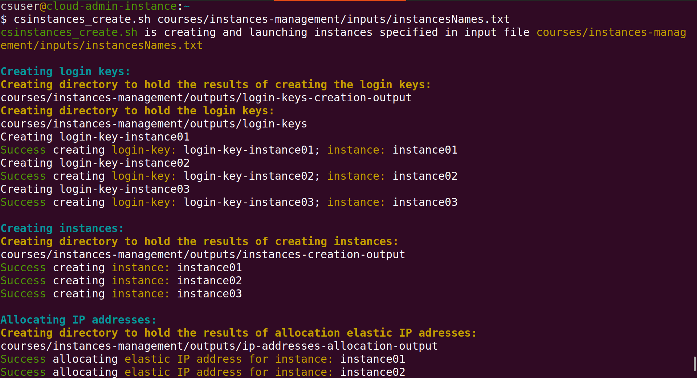
In the screenshot above, you can see that login keys are created first because their resource ID’s must be passed as parameters to create the corresponding instances, which are created second. Then IP addresses are allocated (see bottom of the screenshot above), and then the instances domain names are created because creating a domain name requires passing as parameter the IP address to which the domain name will be mapped.
Once the domain names are created, the allocated IP addresses are associated to the corresponding instances:
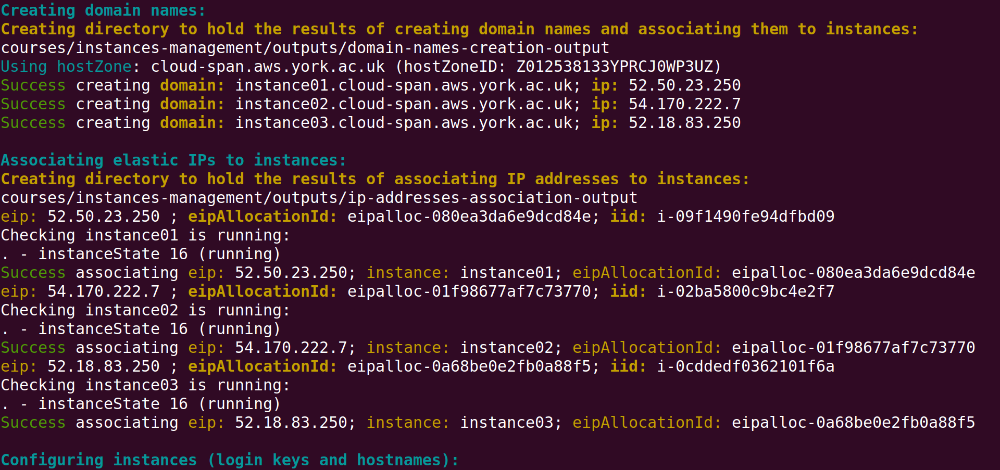
The final step in creating instances is to configure each instance, see bottom of screenshot above and the screenshot below. We will look in some detail at the output of configuring instances in Section 8. Troubleshooting and in the next episode. For the time being you only need to know that configuring each instance consists of:
- enabling access to the
csuseraccount — a newly created instance can only be accessed through theubuntuuser account - configuring the “host name” to be the instance domain name (instead of the instance IP address), so that the terminal prompt, when accessing the instance with
ssh, is something like this:csuser@instance01:~ $andubuntu@instance01.cloud-span.aws.york.ac.uk:~ $— instead of something like this:csuser@52.212.13.253:~ $andubuntu@52.212.13.253:~ $.
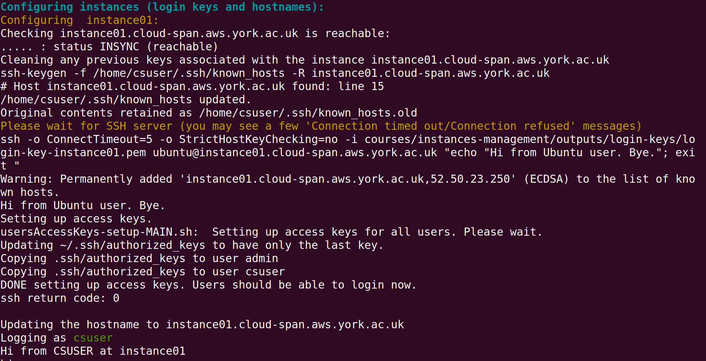
4. Check the Instances Are Accessible
You should now be able to login to the instances you just created. It is convenient to login to a few of the instances that you create for a course to verify that they are reachable, and hence everything went as expected.
You can login to an instance as shown in the introduction to this lesson, running ssh specifying the login key, the csuser and the instance domain name, that is:
Code
$ ssh -i login-key-instance001.pem csuser@instance01.cloud-span.aws.york.ac.uk ### -i stands for identity fileHowever, using ssh as shown above is adequate for the end user of the instance who will be using the same ssh command to access the same instance throughout a course, while being at the directory where the login key file is.
As the manager of multiple instances, at times managing two or more courses or tests simultaneously, you need to be able to login to different instances more easily.
The script lginstance.sh will help you do that — it was downloaded into your environment along with the Scripts. It is used specifying only the instance login key file and the user account to login to, either csuser or ubuntu — both users use the same login key files. Assuming the configuration files used above, and being at the home directory, logging into instance01 would be thus:
Code
csuser@cloud-admin-instance:~
$ lginstance.sh courses/instances-management/outputs/login-keys/login-key-instance01.pem csuser
lginstance.sh: logging you thus: ### this line and the next one are displayed by lginstance.sh
ssh -i courses/instances-management/outputs/login-keys/login-key-instance01.pem csuser@instance01.cloud-span.aws.york.ac.uk
### Welcome message from instance01 lginstance.sh builds the ssh command you need to login to an instance and runs it. The login keys are in the directory ~/courses/instances-management/outputs/login-keys/, so you need to specify the relative path (from your current working directory) to the corresponding login key file.
That long command is rather easy to enter using the Tab key for the shell to complete the name of the script lginstance.sh, the names of the intermediate directories and the name of the login key .pem file. Try it.
What we found would get on the way (before developing lginstance.sh) was specifying the pair user@instance-domain-name (csuser@instance01.cloud-span.aws.york.ac.uk) because the shell cannot help you complete it using the Tab key.
lginstance.sh extracts the domain name from the resourcesIDs.txt file.
5. Understand the Results of Creating Instances
The results of creating instances that you saw displayed at the terminal, and more, are saved to files in the outputs directory. The outputs directory and its content are created by the Scripts as needed. Run the ls command below to list the contents of the outputs directory:
Code
csuser@cloud-admin-instance:~
$ ls courses/instances-management/outputs/The output of the ls command should be the list of sub-directories (in brown) in the screenshot below:
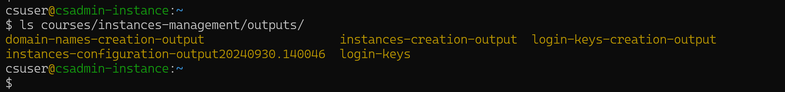
Each of the Scripts that creates or configures AWS resources makes/sends requests to AWS. AWS validates and performs each request if it is valid, and returns back the result of the request wich states whether the request was successful or not, and if successful, the resource ID of the created resource or configuration requested along with other information.
Each of the Scripts that makes such requests creates a sub-directory within the outputs directory to save the results of each request, to a file whose name has, as a sub-string, the name of the relevant instance as specified in the input file instancesNames.txt that you use to create the instances.
The files that were created for the above run of csinstances_create.sh are shown in the screenshot below — use the same ls commands in the screenshot to list the files in each sub-directory within your outputs directory. If you used the instances names we suggested to create the instances, the files created from your run of csinstances_create.sh should have the same names as in the screenshot:
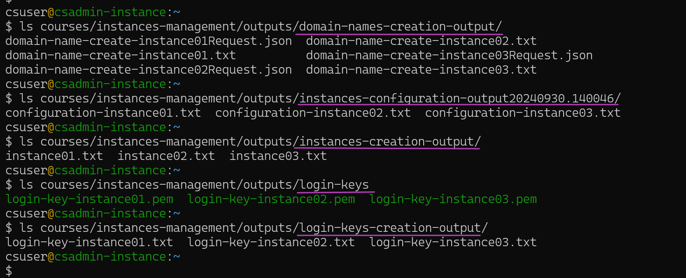
Each instance name is the key to access each instance results files in the outputs directory
Once an AWS resource is created, any further request on the resource to, for example, configure it, stop it, .., and delete it, must include the resource ID received when the resource was created.
The naming convention of the results files mentioned above, that is, to include the name of the corresponding instance in each file name, enables the Scripts to identify the files related to each instance and extract the resource IDs in order to manage the instance and its login key, domain name, etc., through making further requests to AWS.
The two screenshots below show the resource IDs of instance01 and its IP address that are extracted to further manage the instance and its IP address. We will look in more detail at the contents of the results files in the next episode.
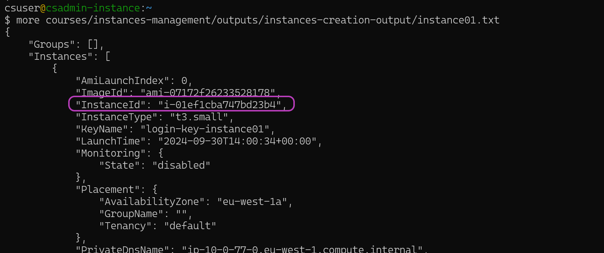
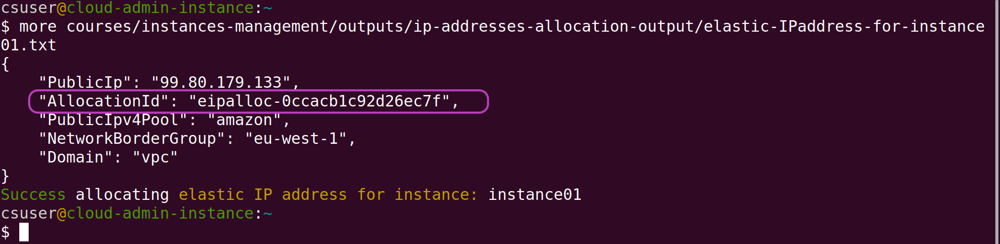
6. Typical Instances Life Cycle: create, stop, start and delete instances
When you create instances through running csinstances_create.sh, the instances and their related resources (login key files, etc.) are created and configured first; then the instances are run (launched/started) and are left running until you either stop them or delete them.
Our typical scenario in managing instances is as follows. When a workshop is scheduled for delivery, say on day D, we usually send the workshop participants the instructions to login to their instances, along with their login key file, one or a few days before D. Thus we usually do the following: - create the instances before D for the login key files to be created. - stop the instances shortly after (within minutes) to reduce costs. - re-start the instances again some time before the workshop starts. - delete all the instances once the workshop is over.
We perform those four tasks running the Scripts csinstances_*.sh in our terminal, but we usually are logged in to the AWS Console too, at the EC2 — Instances page, to check that the instances state changes according to the state intended by each script, as outlined below.
Follow along: - login to the AWS Console (with your IAM user account), type EC2 (for Elastic Compute Cloud) in the AWS search box at the top and press Enter, and then click on Instances on the left menu pane, see the page below. - run the scripts below in your terminal
Creating instances one or more days before a workshop starts
Only run csinstances_create.sh if you did not run it in the previous section!!!
Code
csuser@cloud-admin-instance:~
$ csinstances_create.sh courses/instances-management/inputs/instancesNames.txt Once you have run csinstances_create.sh, the instances state in the AWS Console will be Running as shown below (you may need to refresh the page):
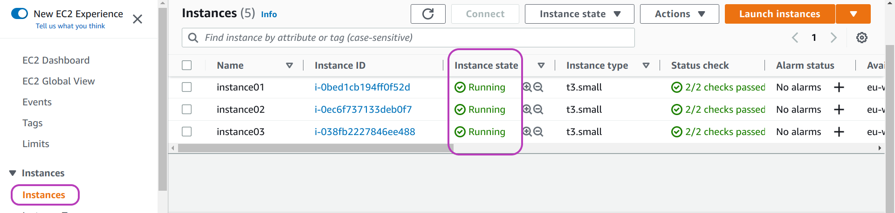
Once all the instances are created, you will be able to send the login key files to whoever is responsible for emailing the workshop participants. The login key files are in the directory ../outputs/login-keys/ (within your course/workshop-name directory — instances-management directory in the running example). We usually upload the login-keys directory to a shared GDrive directory and inform someone we have done so.
Stopping the instances shortly after (within minutes) they are created
Code
csuser@cloud-admin-instance:~
$ csinstances_stop.sh courses/instances-management/inputs/instancesNames.txt Output
csinstances_stop.sh is stopping instances specified in input file courses/instances-management/inputs/instancesNames.txt
Stopping instances:
Creating directory to hold the results of stopping instances:
courses/instances-management/outputs/instances-stop-output20230101.182907
Success stopping instance: instance01
Success stopping instance: instance02
Success stopping instance: instance03Once you run csinstances_stop.sh, the instances state in the AWS Console will change from Running to Stopping as shown below, and after a short while the state will change to Stopped, and will remain so until you run another script that changes the state of the instances.
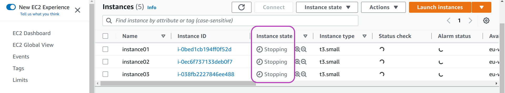
Re-starting the instances just before the workshop
Code
csuser@cloud-admin-instance:~
$ csinstances_start.sh courses/instances-management/inputs/instancesNames.txt Output
csinstances_start.sh is starting instances specified in input file courses/instances-management/inputs/instancesNames.txt
Starting instances:
Creating directory to hold the results of starting instances:
courses/instances-management/outputs/instances-start-output20230101.185724
Success starting instance: instance01
Success starting instance: instance02
Success starting instance: instance03Once you run csinstances_start.sh, the instances state in the AWS Console will change from Stopped to Pending (momentarily), and then to Running and will remain so until you run another script that changes the instances state.
Deleting the instances and all their resources once the workshop is over
Code
csuser@cloud-admin-instance:~
$ csinstances_delete.sh courses/instances-management/inputs/instancesNames.txt Output
csinstances_delete.sh is terminating instances specified in input file courses/instances-management/inputs/instancesNames.txt
Terminating instances:
Creating directory to hold the results of deleting instances:
Success terminating instance: instance01
..
Deleting login key pairs:
Success deleting login-key: login-key-instance01; instance: instance01
..
Deleting domain names:
Success deleting domain: instance01.cloud-span.aws.york.ac.uk; ip: 99.80.179.133
..
Disassociating following elastic IP addresses:
Success disassociating elasticIP, instance: instance01; eipAssociationId: eipassoc-0ff7c16e5ff5f7178
..
Deallocating elastic IP addresses:
Success deallocating eip: 99.80.179.133; instance: instance01; eipAllocationId: eipalloc-0ccacb1c92d26ec7f
..You can delete instances in any state — you don’t need to stop instances to delete them.
Once you run csinstances_delete.sh, the instances state in the AWS Console will change from Stopped or Running to Shutting-down, and after some minutes to Terminated, and after some more minutes the terminated instances will no longer be shown in the AWS Console.
The output box above shows only the main steps of csinstances_delete.sh in deleting instances and related resources, namely: - Terminating instances - Deleting login key pairs - Deleting domain names - Disassociating elastic IP addresses and - Deallocating elastic IP addresses
You should always see a Success … message for each resource that is terminated, deleted or deallocated, but not always for disassociating elasticIPs. Instead, you may see the error in the callout below. There is nothing to worry about this message, ignore it. But you should not ignore an error in any other step — which should not happen if your configuration is valid; the Scripts have not failed since we got them right.
This error may happen because instances are deleted first, and by the time the Script that disassociates IP addresses from instances is run, some of the associations of IP addresses to instances may no longer be valid/existant. This is more likely to happen if an instance is stopped when csinstances_delete.sh is run. If an instance is running, shutting it down and then terminating it will take longer, and hence its association of IP address to instance is more likely to be valid when it is to be disassociated, which will result in successfully disassociating the IP address.
The results of stopping, starting and deleting instances are also saved to files
The results of running csinstances_stop.sh, csinstances_start.sh and csinstances_delete.sh are also saved within sub-directories in the ../outputs/ directory.
Run the ls command below to look at the sub-directories that were created after running those scripts.
Code
csuser@cloud-admin-instance:~
$ ls courses/instances-management/outputs/The output of ls should be similar to this one:
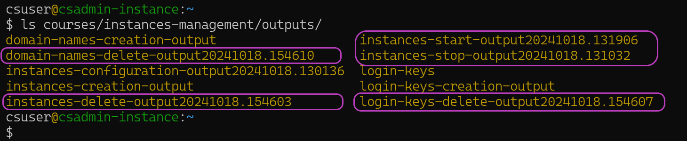
The newly created sub-directories are those in boxes; their names are suffixed with the date and time when the relevant script was run. Inside each sub-directory there is a file for each request made by the relevant script, one request for each instance or related resource.
We won’t look into these files. Their main use is to register the results of AWS requests in case of errors happening. They were essential while developing the Scripts to get them right.
Create instances in two steps to avoid unnecessary costs
You can avoid some of the cost of deploying instances by “creating instances” in two steps. You will first run the script csinstances_create1stPart.sh, and a few days later (just before the relevant workshop starts) the script csinstances_create2ndPart.sh. As shown below, you run those two scripts in the same way as you run all the other scripts, passing in the “instancesNamesFile” that contains the names of the instances to create:
Code
csuser@cloud-admin-instance:~
$ csinstances_create1stPart.sh courses/instances-management/inputs/instancesNames.txt
##### and a few days later:
csuser@cloud-admin-instance:~
$ csinstances_create2ndPart.sh courses/instances-management/inputs/instancesNames.txt Doing so will save a significant cost if you are running a workshop that requires relatively large instances in terms of compute and storage capacity, up to about US $300 per day (as at 20230414), for 50 instances of type t3.2xlarge, each instance with 240GB storage. The savings come out as follows. Recall that the script csinstances_create.sh first runs the script that creates the login keys, then the script that creates the instances, then .. the IP addresses and finally .. the domain names. Of all these resources, it is the instances that are more costly. The script csinstances_create1stPart.sh only creates the login keys, the IP addresses and the domain names. You will then be able to send the workshop participants their login key and instance domain name, say, on a Friday. On the following Monday you will then run csinstances_create2ndPart.sh to create the instances, associate the instances to the IP addresses, and to configure the instances.
7. Unforseen Instance Management
The Scripts use-case scenario outlined above is typical of short workshops that last 1-4 days in a row. Yet sometimes it doesn’t go that smoothly. Sometimes you won’t be able to run the scripts csinstances_*.sh using the same file “instancesNamesFile”.
Sometimes you will receive requests like those in the list below after you have both created an “instancesNamesFile” and run the script csinstances_create.sh with that file, that is: some instances have been created, and then, you receive requests like:
- can you create N more instances? — We received N last-minute registrations to the workshop.
- can you delete instance A? — The participant is ill and cancelled.
- can you leave the instances B and C running after the workshop until date? — The participants have not yet managed to cover the course but are very keen to do it.
- can you stop instance D (don’t delete it) until further notice? — The participant has started the workshop but something urgent happened and will get back to it asap.
If you are to fulfill such requests, then you need to manage multiple “instancesNamesFile”s. This is because the Scripts create (configure, stop, start or delete) all the instances whose names you specify in an “instancesNamesFile” you pass in to the Scripts.
For example, suppose the following scenario: (1) you have created the three instances as instructed in Section 3 Create the Instances — you used the file instancesNames.txt to create the instances named instance01, instance02, and instance03; (2) you are then asked to create another instance (for a latecomer to the workshop you are running); and (3) for the new instance you decide to use the name instance04.
Now you need to create another “instancesNamesFile”, say, instancesNames-04.txt, that contains only the instance name instance04, and then run csinstances_create.sh instancesNames-04.txt.
Avoid modifying an “instancesNamesFile” that you have already used to create intances
In the example above, you should not add the instance name instance04 to the file instancesNames.txt (that you previously used to create instances01, ..02 and ..03), and then run again csinstances_create.sh instancesNames.txt — it will fail as shown in the screenshot below:
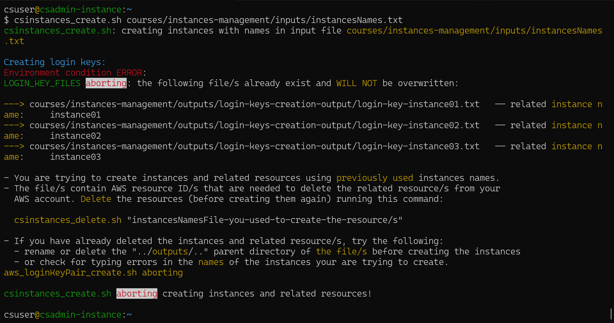
The Scripts check instance operations are valid given the state of the running environment
Recall (from Section 3 Create the Instances) that login keys are created first, then instances, etc. Login keys are created by the script aws_loginKeyPair_create.sh which, as you can see in the screenshot above, first checks whether the login key files for the instances to be created exist or not, aborting its execution if any such file exists. In the run shown in the screenshot, aws_loginKeyPair_create.sh found the login key files for instances01, ..02, and ..03, and hence displayed the message shown and aborted its execution which, in turn, caused csinstances_create.sh to abort its execution as well.
As stated in that message, the files that were found contain the AWS resource IDs of login keys already created. Those resource IDs are needed to delete the login keys from your AWS account. The Scripts do not overwrite files that contain such resources IDs. If those files are overwritten, or lost, before you delete the corresponding instances and related resources (running csinstances_delete.sh), you will need to use the AWS Console to delete manually the corresponding instances, login keys, IP addresses and domain names.
If you want to create instances with names you have already used, you must first delete the instances already created and their related resources (running csinstances_delete.sh), then delete or rename the ../outputs/ parent directory, and finally create the instances. We have done so only for some testing, see the Troubleshooting section.
All the Scripts that create AWS resources carry out a similar check to that carried out by aws_loginKeyPair_create.sh. For each instance name in the “instancesNamesFile” passed in to csinstances_create.sh, each script checks whether the instance, or the resource for that instance, has been created or not, which amounts to checking whether the file with the corresponding AWS resource ID exists or not. If any such file does exist, the script aborts its execution without issuing any AWS request to create resources.
All the Scripts that delete AWS resources carry out a similar check but act on the opposite. … If any such file does not exist, the script aborts its execution without issuing any AWS request to delete resources. The script aws_instances_configure.sh does this check.
Given a set of instances names as specified in an “instancesNamesFile”, the two checks above guarantee that all or none of the instances, and/or related resources, are created or deleted.
Finally, all the Scripts aws_*.sh check that the “instancesNamesFile” passed in to them has only one value (one instance name) in each line. Thus, if you inadvertently passed in to the Scripts the file name resourcesIDs.txt or tags.txt, which both have two values in each line, the Scripts will abort their execution.
Using multiple “instanceNamesFile”s to manage unforseen instances management requests
There is no problem with having multiple “instancesNamesFile”s in an ../inputs/ directory.
The main issue is how to name those multiple files so that you keep track of what happens, regarding instance management, throughout a workshop.
The listing below illustrates the naming convention we follow to name multiple “instancesNamesFile”s to handle similar requests to the ones described in the introduction to this section.
The listing shows the files in the inputs directory of a workshop we ran through late October and November 2022:
Output
instancesNames20221028-create-301-25.txt
instancesNames20221031-create-326.txt
instancesNames20221031-create-327.txt
instancesNames20221031-create-328.txt
instancesNames20221101-create-329.txt
instancesNames20221109-delete-307.txt
instancesNames20221114-delete-303,315,321.txt
instancesNames20221115-create-again-321.txt
instancesNames20221121-delete-310,314,320,321,323,325.txt
instancesNames20221123-stop-306.txt
instancesNames20221128-delete-302,304-05,308-09,311-13,316-19,322,324,326-29.txt
instancesNames20221130-delete-301.txt
resourcesIDs.txt
tags.txtThe workshop used instances of type t3.2xlarge, each instance with 8 processors and 32 GigaBytes of main memory and 240 GB of secondary storage — not cheap. The instances were to run for 4 weeks unless the participants would not make progress which we checked weekly looking at the command history and whether relevant results files existed. We would delete instances that showed no progress was made.
From the file listing above we can recall the following:
- On 28 October we created the 1st file at the top and run
csinstances_create.sh courses/../inputs/instancesNames20221028-create-301-25.txtin order to create 25 instances named: instance301, instance302, instance303, …, instance325. - On 31 October we received 3 requests, at different times, to create one more instance. Upon receiving each request, we created another “instanceNameFile” (2nd, 3rd and 4th files in listing above) with only one instance name inside (instance326, instance327, instance328 respectively), and run
csinstances_create.shwith each file. - On 1 Novemeber we received another request to create one more instance and handled it as just described to create instance329.
- On 9 November we deleted instance307 (for not showing progress):
- we made a copy of instancesNames20221028-create-301-25.txt onto instancesNames20221109-delete-307.txt.
- opened the latter with our text editor and deleted all lines except the line with the instance name instance307.
- we then run
csinstances_delete.sh courses/../inputs/instancesNames20221109-delete-307.txt.
The other “instancesNamesFile”s in the list were handled similarly to the way the event on 9 November was handled, namely: - creating a new file containing only the names of the target instances. - naming the file instancesNamesDate-operation-instancesNumbersList.txt — where operation is create, stop, start, or delete. - running the relevant csinstances_*.sh script to create, stop, start or delete the target instances.
The tedious part of this file naming convention is specifying the intancesNumbersList. However, it is not required often and it gives you an accurate overview of the instances operations you have performed.
8. Troubleshooting
This last section presents the problems we have come across using the Scripts and how we solved them.
“Connection timed out” or “Connection refused” messages persist
Those messages are related to accessing an instance with ssh. We have come across those messages in two scenarios:
- when an instance is to be configured — recall that instance configuration is the last step in creating instances; and
- when an instance is to be accessed by the end user (after the instance has been configured)
The first scenario is shown below. It has to do with the SSH server in the instance not yet being ready to accept any login request, and hence the client (the script aws_instances_configure.sh which is invoked last by csinstances_create.sh) receives an unsuccessful response and displays either the message “Connection timed out” or “Connections refused”, or both. This situation is “normal” because we know the instance has just been launched. It’s only a matter of waiting for the SSH server to be ready.
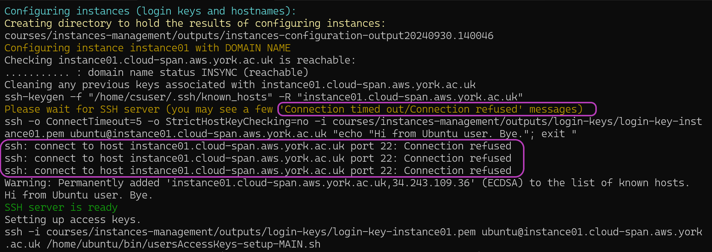
Note in the screenshot the message in brown “Please wait for SSH server (you may see a few ‘Connection timed out/Connection refused’ messages)”, and the ssh-related message in white just below “ssh -o ConnectTimeout=5 -o StrictHostKeyChecking=no -i courses/…”. The script aws_instances_configure.sh prints those messages and then gets into a loop to repeatedly issue that ssh command until it is successful. In the screenshot, three issues of that ssh command were unsuccessful and the message “ssh: connect to host instance01… port 22: Connection refused” was displayed three times. Once that ssh command is successful, aws_instances_configure.sh proceedes to issue the ssh commands that configures the instance. That is, the sole purpose of the ssh command that is issued within the loop is to ensure the SSH server in the instance is ready.
How many “Connection timed out/Connection refused” (unsuccessful ssh) messages would be “normal”?
We have seen up to about 15 of those messages and then ssh succeeds.
Sometimes it is network congestion during peak hours that will cause those messages — sometimes you will not see any of those messages.
Usually those messages will be displayed for the first instances to be configured and not for subsequent instances because the SSH server in subsequent instances has some more time to get ready.
However, an instance configuration step may indeed get stuck displaying those messages no end. It has happened to us under two conditions that we will call test conditions and normal conditions.
Test conditions
By test conditions we mean creating instances to test something (as opposed to creating instances for a workshop: normal conditions). In testing something, we have sometimes created a few instances and immediately after realised we forgot somethineg, corrected it, deleted the instances and created the instances again using the same instances names, and then got those messages no end.
We had to delete the instances, and create new ones with different names. We believe the problem is the too close subsequent requests to map the same domain names to different IP addresses. The AWS domain name system, Route 53, needs sometime to propagate the changes to its servers, etc. It has not been worth trying to solve this. They are only tests and we can use other instances names.
Normal conditions
Creating instances for a workshop is normal conditions. We have got those messages under normal conditions and the following has always worked for us:
abort the run of the script
csinstances_create.shby pressingCtrl-c(the keys Ctrl and c simultaneously) a few times until you get back the prompt of your terminal. You will be aborting the scriptaws_instances_configure.shfirst, the one that displays those messages, and then the scriptcsinstances_create.shwhich invokedaws_instances_configure.shas the last step of creating instances.
Note that the AWS resources of all instances have already been created when you abort the Scripts while seeing the messages “Connection timed out” or “Connection refused”. It is only the instances configuration phase that has not been completed.reboot the instance that got stuck in the configuration phase — the instance should be Running if all the previous steps were succesful (they should; check the messages displayed to your terminal). We usually reboot an instance in the AWS Console. Go to the EC2 - Instances page - check the box to the left of the instance name - click on Instances state drop-down menu at the top - select Reboot Instance.
wait a few minutes — even if the instance state changes to Running in the AWS Console: the SSH server needs to get ready.
run
aws_instances_configure.shas you rancsinstances_create.sh, for example:
Code
aws_instances_configure.sh courses/instances-management/inputs/instancesNames.txt - this run will configure all the instances specified in the file instancesNames.txt. There is no problem if some instances were previously configured (before aborting the Scripts) and are configured again.
- alternatively, you may want to deal only with the instance on which the configuration step got stuck. In this case you need to create another “instancesNamesFile” containing the name of that instance only and run
aws_instances_configure.shwith that file (see the previous section), for example:
Code
aws_instances_configure.sh courses/instances-management/inputs/instancesNames20230104-configure-10.txt - Alternatively, you may try first all of the steps above except rebooting the instance. It has worked for us. We believe the benefit of rebooting the instance is the cleaning/deleting of any previous
sshrequests enqueued somewhere waiting to be served.
The other scenario where Connection timed out /Connection refused messages may be displayed is when an instance is to be accessed by the end user (after the instance has been configured and is running). In this case, it is the configuration of the server the end user is connected to gain access to the Internet. The server is blocking ssh communication, either from the end user ssh client to reach the instance or from the instance SSH server to reach the end user machine, or both. If you have a mobile phone handy, turn on the “Mobile Hotspot” WiFi, ask the end user to connect to it, and then to connect to the instance. If this works, the end user needs to ask the IT department responsible for the server to solve the issue.
WARNING: REMOTE HOST IDENTIFICATION HAS CHANGED
The error behind this message has also to do with accessing and instance with ssh. It used to happen to us and happened to a workshop participant whose instance was created, deleted and created again with the same name.
The participant was sent the login key file the first time the instance was created. We then deleted the instance (instance321) in the file listing in section 7 due to not seeing any progress. The participant asked the instance to be created again. We created the instance again using the same name and send the participant the new login key file. When using ssh to login to the newly created instance, the participant got that message.
The solution was to tell the participant to run the command below before running ssh so that the instance host domain is removed from the participant’s ~/.ssh/known_hosts file.
Code
ssh-keygen -f "$HOME/.ssh/known_hosts" -R instance321.cloud-span.aws.york.ac.ukThe error used to happen to us when developing the Scripts out of carrying out multiple tests using the same instances names. So we decided to add that ssh-keygen command within the script aws_instances_configure.sh just before invoking ssh — see the screenshot above, fourth line from the top.